Wi-Fi 7 2022
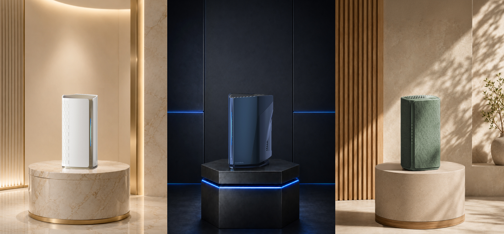
Three identities. Designed for the way you live.
This was the second major project I took on after joining Gemtek, and a defining milestone. As the Wi-Fi 7 era arrived in 2022, I was entrusted with designing the company's first generation of Wi-Fi 7 routers, spanning three distinct lifestyle scenarios and market positions. These products needed to represent a breakthrough in Gemtek's design capabilities and command the spotlight at investor presentations and international exhibitions. My design approach is rooted in storytelling and emotional connection, built upon consumer research and market trends — a designer is not just a stylist, but a creator of emotional resonance with the user. I am proud to have brought my design expertise and insight to this project.
2023 marked the breakout year for Wi-Fi 7, with every major player racing to stake their claim. With three SoC platforms of distinct performance tiers in hand and a plan to launch them simultaneously, I saw this as more than just a product release—it was a strategic opportunity to break free from Gemtek's established mold.
Historically, Gemtek's products have been predominantly ODM-driven, characterized by neutral, conservative white plastic enclosures with little brand distinction. Yet the three SoCs themselves presented a clear performance hierarchy—rather than simply varying the exterior styling, I chose to work backward from each chipset's hardware capabilities and specifications to identify the target audience and usage scenario each product should truly serve.
Based on this performance segmentation, I developed a product strategy that binds design language directly to customer positioning, carving out three distinct market directions: for family-oriented users who value domestic harmony, a natural material aesthetic that blends seamlessly into everyday life; for discerning, quality-conscious consumers willing to invest in good design, a refined and understated premium vocabulary; and for performance-driven gamers, an esports-inspired visual identity that channels their appetite for speed and intensity.
Three products. Three audiences. Three design languages. This approach not only gives every design a clear commercial purpose, but also demonstrates to clients that Gemtek has the ODM capability to deliver tailored, end-to-end solutions for diverse end markets.

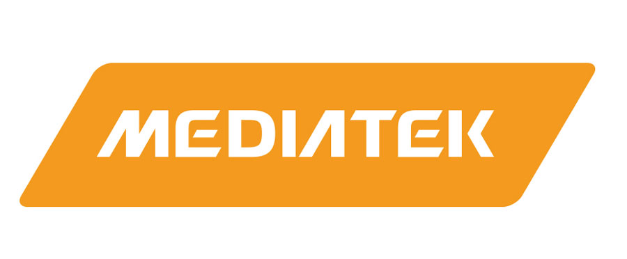

The process began with extensive sketch explorations, searching for forms that could carry three fundamentally different emotional identities within a shared tower-type product architecture. Industrial design is not just about shaping an exterior. I placed particular emphasis on the emotional message each form conveys. Dozens of concepts were developed and evaluated against this criterion, rigorously examining whether each design could visually communicate the right signal to its intended audience. Through multiple rounds of iteration and refinement, three directions ultimately took shape, each with a distinct material language, silhouette, and personality that resonates directly with its target user.
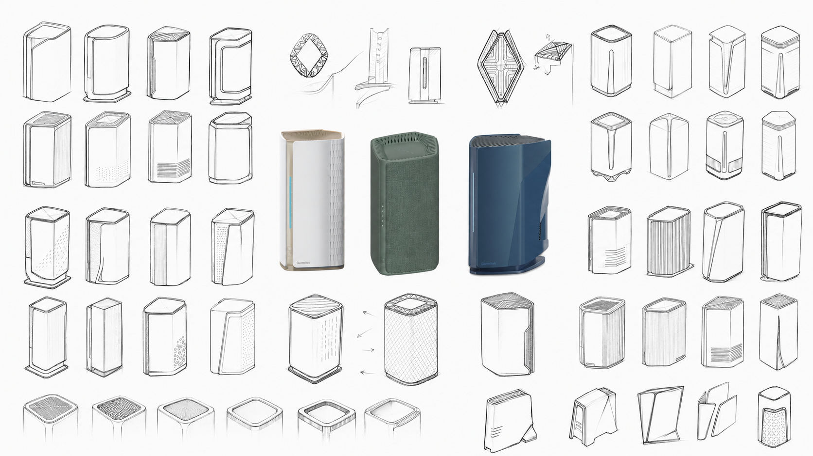
Wabi-Sabi, born from Japanese aesthetics, celebrates the beauty found in imperfection, transience, and understatement. It values what is natural over what is polished, what is lived-in over what is pristine. For users who see their home as a sanctuary rather than a showroom, technology should feel like it belongs, not intrude.This philosophy guided every design deatil. The exterior adopts a clean, restrained geometric form, deliberately avoiding sharp or aggressive lines to maintain a sense of calm. Fabric and plastic are blended to create a tactile surface that feels handcrafted rather than mass-produced. The 3D textures of linen and woven bamboo patterns introduce organic irregularity, the kind of subtle imperfection that Wabi-Sabi cherishes. A specially formulated bamboo green color paired with chlorinated rubber painting adds depth and warmth, inviting the user to touch rather than merely look. This is a product designed to sit quietly on a shelf, age gracefully with its surroundings, and remind its owner that technology can be gentle.
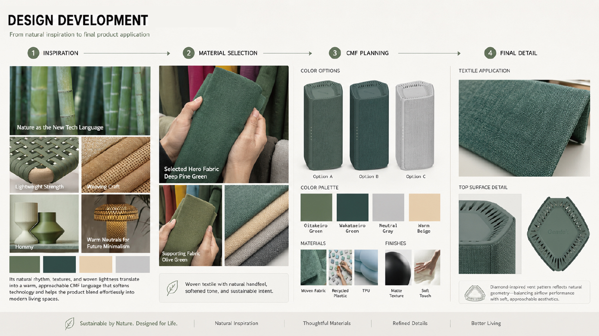

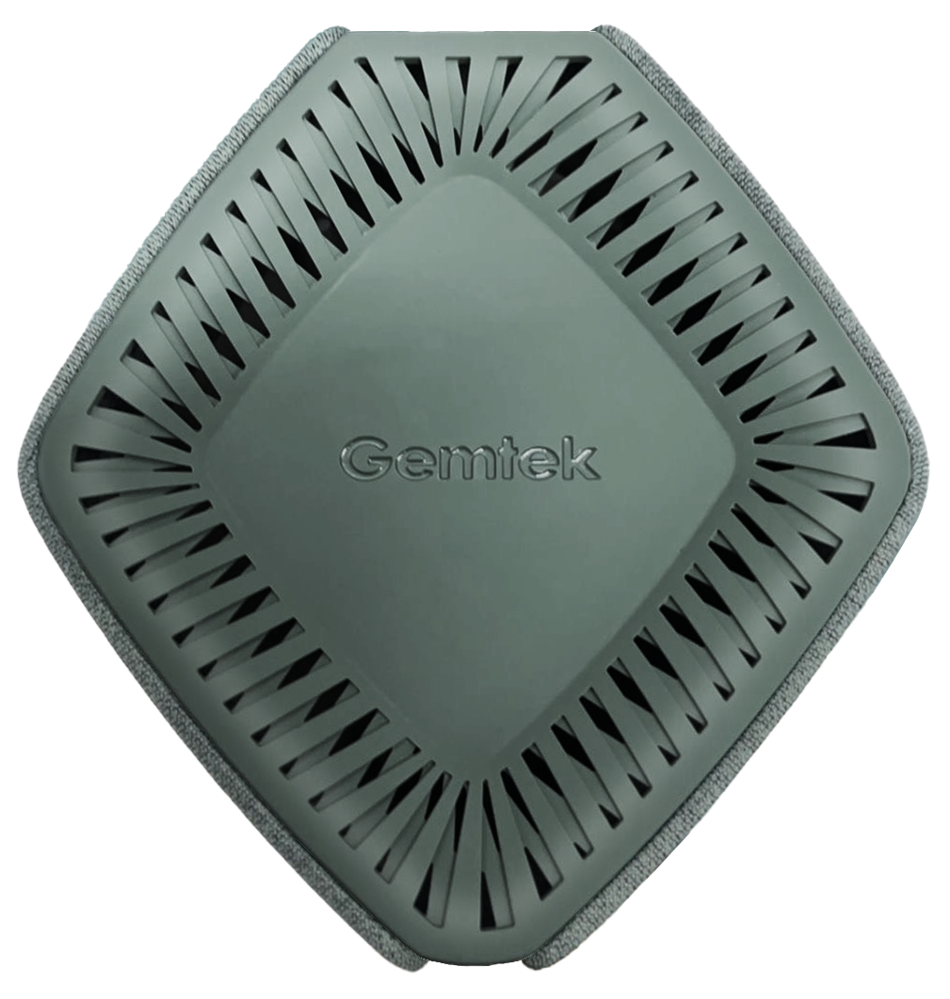
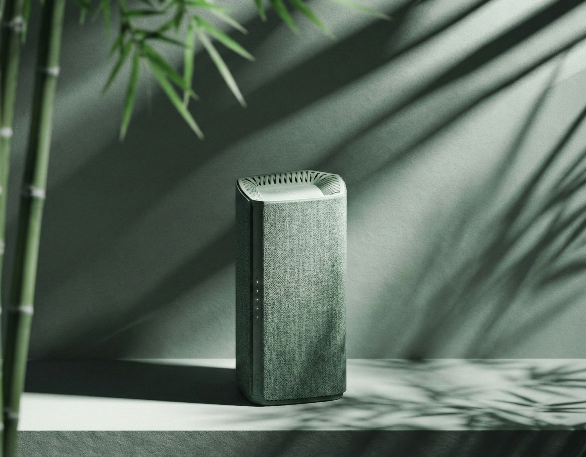


Subtle Luxury is defined by a single principle: true refinement never shouts. This style values precision in detail, restraint in expression, and materials that reward a closer look. It speaks to users who are drawn to quality over spectacle, the kind of people who choose objects not for status, but because they genuinely appreciate thoughtful craftsmanship.
Champagne gold was selected as the primary color for its soft, warm metallic tone, elegant without the ostentation of pure gold. The form uses concave surface variations that catch and shift light across the body, creating a sense of movement without any visual noise. The side panel venting, generated through Rhino Grasshopper, produces a computationally precise gradient pattern inspired by racing aesthetics, a hidden layer of complexity visible only to those who look closely. Polished recessed areas amplify these reflections, giving the surface a living texture that evolves with the light in the room. This is a router that doesn't hide behind a cabinet. It earns its place on the shelf.
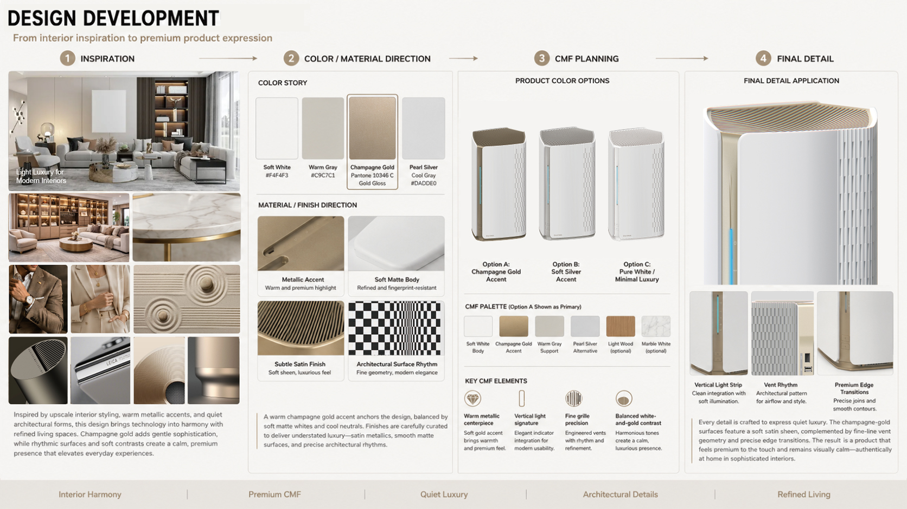
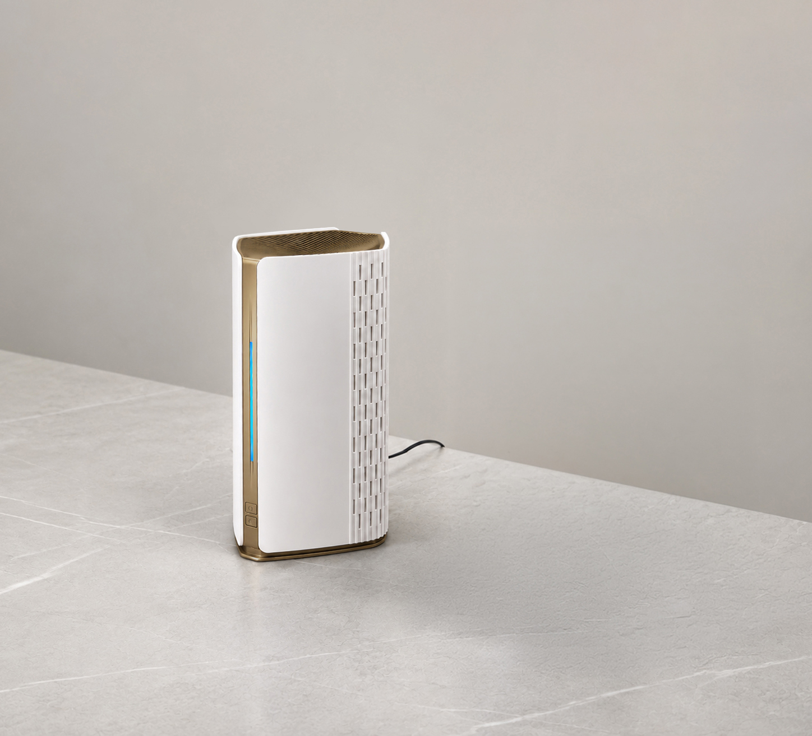

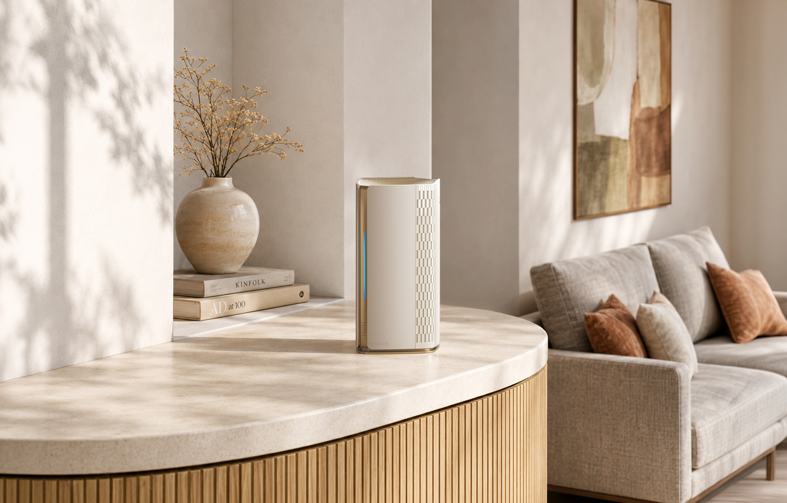

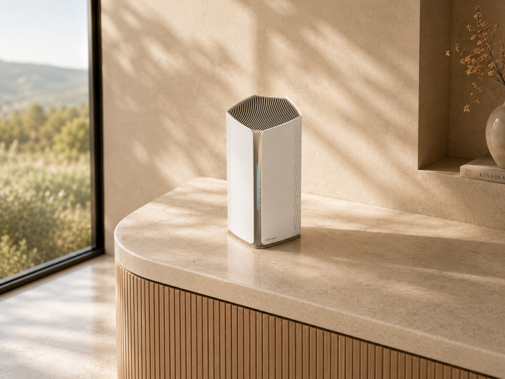
Gaming users expect more than speed — they look for intensity, control, and a product presence that matches the energy of their setup. For this full-featured gaming gateway, the design focuses on transforming high performance into a bold visual language, combining raw power, sculptural tension, and emotional impact.
The main body adopts a forward-leaning stance inspired by the poised aggression of a racing car at the starting grid, creating a sense of acceleration even when the product is still. Its side surfaces combine the aerodynamic tension of sports cars with the powerful, streamlined form of an orca, turning a large product volume into a symbol of speed, strength, and control.
The vertical light strip expresses sprint, pulse, and high-speed connectivity, while the armor-inspired top grille adds a performance-driven and battle-ready character. Finished in deep blue and graphite tones, the product balances gaming intensity with industrial refinement. As part of Gemtek's Ocean Series, this design expands the lineup into a more aggressive gaming category — one defined by speed, power, and commanding presence.


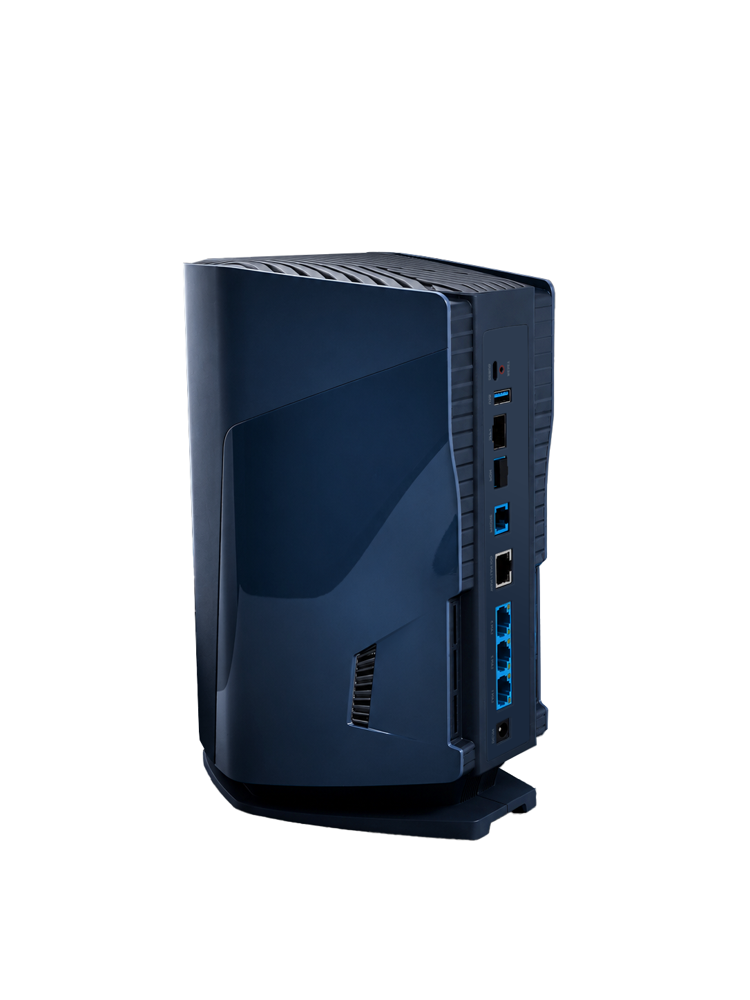